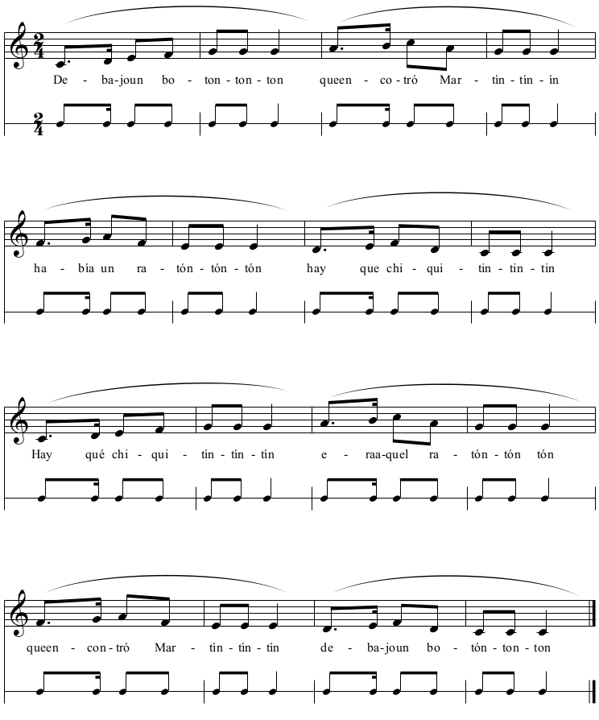
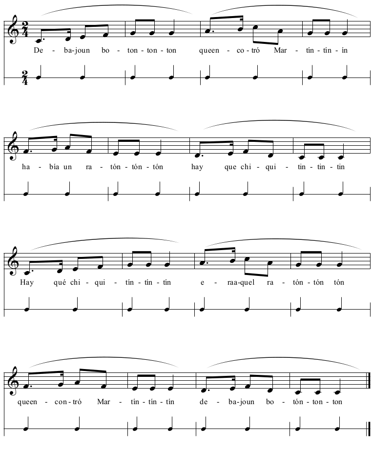
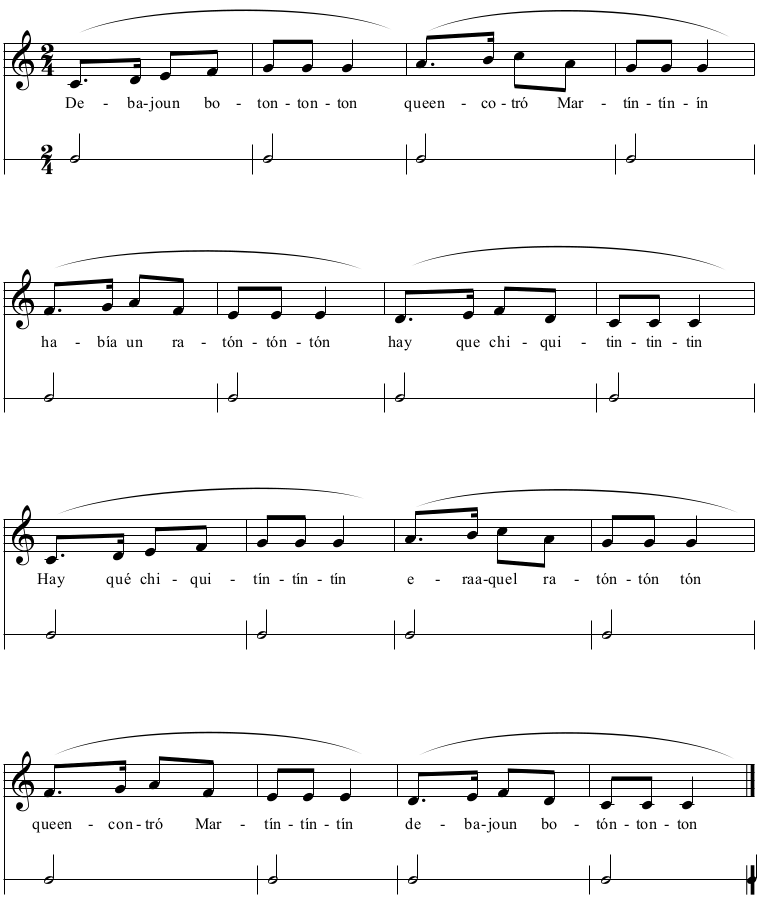
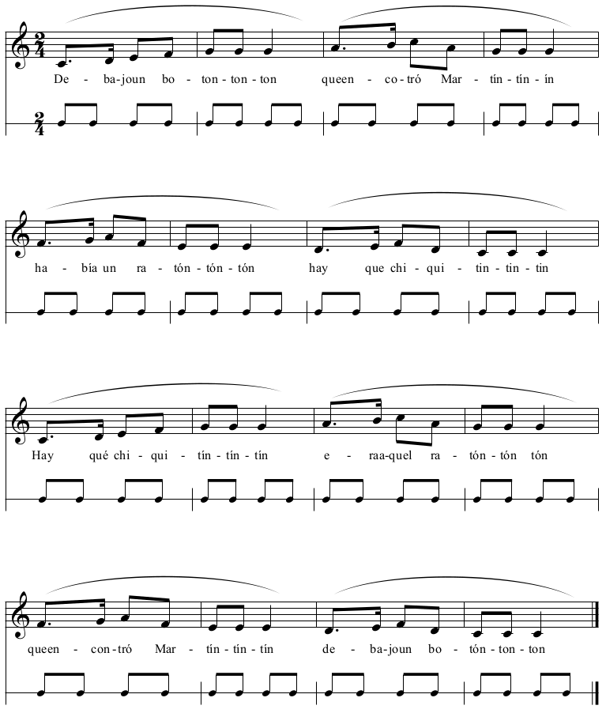

9.1 Principios generales
Como hemos visto en el capítulo anterior, la palabra en la canción está íntimamente relacionada con el ritmo de la misma, pues según la escuela de composición de canciones, o bien se busca un ritmo a un texto ya creado o bien se busca un texto a un ritmo ya creado. Sea como fuere, al cantar una canción el ritmo de la misma está definido por las sílabas de las palabras.
Toda música está compuesta de 4 elementos rítmicos claramente diferenciados, que conforman el esqueleto rítmico de la misma y que dan forma a su tejido rítmico y métrico. Nosotros los llamaremos “modos rítmicos”, que no se deben confundir con los patrones rítmicos de la música aristotélica y medieval.
Es común confundir los 4 elementos rítmicos que componen una pieza o tema musical, pues todos ellos se suelen llamar de manera equívoca e indistintamente ritmo.
Ritmo; el ritmo de una canción es exactamente cada golpe de la melodía. Está asociado habitualmente, aunque no siempre, a cada sílaba de la canción. De los cuatro modos rítmicos es el que generalmente no es regular, es decir, que varía en sonidos más cortos o largos (como veremos, aunque de manera menos habitual, el tempo,la división y el compás también pueden ser irregulares).
Tempo; también conocido como pulso. Es el caminar, el paso que lleva la música, es un elemento constante que puede variar de manera leve a través de elementos agógicos como el accelerando y el rallentando.
Compás; también conocido como acento. Es la unidad rítmica más amplia, pues se refiere a la primera parte del compás. Generalmente es constante, aunque si cambiamos el compás en un tema o canción o usamos compases de amalgama no lo será.
División (del tempo), también conocido como subdivisión (del acento), es el elemento rítmico que marca la división del tiempo y que puede ser binaria (en grupos dos, cuatro, ocho etc.) o ternaria (en grupo de tres, seis, nueve, etc.)
A la hora de realizar los modos rítmicos sobre una canción es de suma importancia la elección de la misma, comenzando por canciones con un ritmo sencillo de comienzo tético (en el primer tiempo del compás), con una división clara y un acento en el primer tiempo del compás igualmente marcado. Os recomendamos comenzar con canciones de división binaria, introduciendo la división ternaria cuando la binaria esté interiorizada. Del mismo modo, la división de las frases ha de ser clara a la hora de encontrar y marcar el primer tiempo del compás.
En la siguiente partitura podéis ver un ejemplo de canción con sus modos rítmicos. En el pentagrama de arriba está escrita la canción y en el pentagrama inferior los diferentes modos rítmicos.
Ejemplo de Debajo de un botón con los modos rítmicos debajo
Canción y ritmo

Canción y tempo

Canción y compás

Canción y división


Iniciación al Lenguaje Musical en Primaria por Alejandro Pozo Soto bajo licencia Creative Commons Reconocimiento-NoComercial-CompartirIgual 4.0 Internacional License.